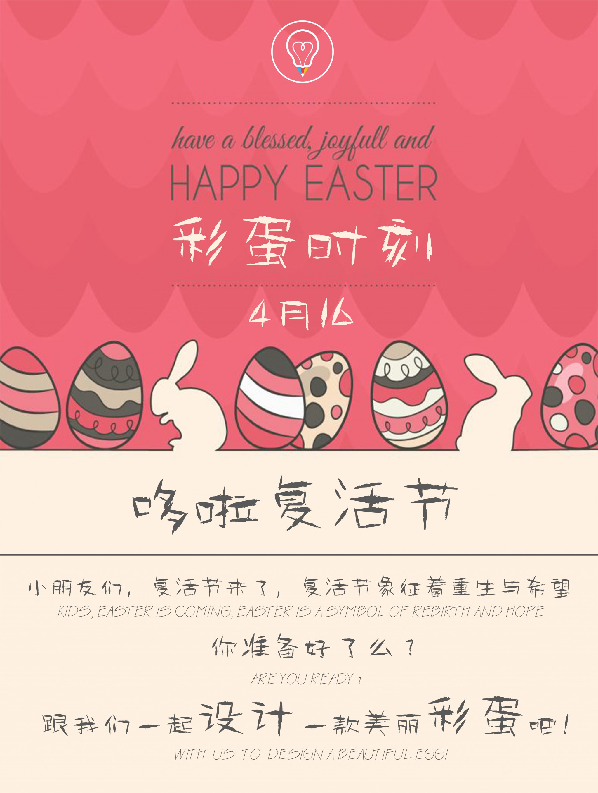

-
我要参加活动
哆啦·涂鸦植树节
近代法定的植树节则起源于美国。1872年美国内布拉斯加州决定自1885年起，每年4月22日为州植树节， 以后美国各州以至世界各国根据其地理位置和气候条件确定各自的植树节。
“植树节”是一些国家以法律形式规定的以宣传森林效益，并动员群众参加造林为活动内容的节日。按时间长短可分为植树日、植树周或植树月，总称植树节。 通过这种活动，激发人们爱林、造林的感情，提高人们对森林功用的认识，促进国土绿化，达到爱林护林和扩大森林资源、改善生态环境的目的。是为了动员全民植树而规定的节日。1979年2月23日，我国第五届全国人大常务委员会第六次会议决定，仍以3月12日为中国的植树节，以鼓励全国各族人民植树造林，绿化祖国，改善环境，造福子孙后代。
同学们你们准备好了吗？加入我们的地球保卫战吧！让我们给大树穿上新衣，让我们给小树新的生存环境！
-
我要参加活动
哆啦·彩蛋时刻
复活节彩蛋是为了给人们带来快乐——确实如此！这些彩蛋精美漂亮且富有装饰性，它们代表着人们的美好心愿，并与你分享季节更替的喜悦。 历史和风土人情为主，游行者化装成为苏格兰风笛乐队以及皇宫卫士，吸引了众多的游客。穿上自己的新袍，庆祝基督的新生。复活节期间， 人们还喜欢彻底打扫自己的住处，表示新生活从此开始。节日期间，人们按照传统习俗把鸡蛋煮熟后涂上红色，代表天鹅泣血，也表示生命女神降生后的快乐； 大人孩子三五成群地聚在一处，用彩蛋作游戏；他们把彩蛋放在地上或土坡上滚，最后破裂者即为获胜，胜利者可以得到所有游戏者的彩蛋。该活动非常普通， 即使是白宫，也要在复活节中组织这种游戏，不过这里是将彩蛋放在草坪上滚；人们相信， 彩蛋在地上来回滚动可以使恶魔不断惊颤、倍受煎熬。这种风俗历史悠久，鸡蛋是复活节的象征，因为它预示着新生命的降临，相信新的生命一定会从中冲脱出世。
-
我要参加活动
STEAM·计算机编程
大多数玩具的目的是让孩子们解决“开放性趣味问题”，并能够享受这种感觉；这些玩具的另一项作用在于，让孩子们在克服与机器人交流过程“挫败感”的过程里， 收获勇气与毅力；我们的同事发现，勇气、坚持、逐渐成长的思维模式，或是对“通过练习就可以取得进步”的信仰，可能是成长为编程高手的关键素养。 从我们的研究中很容易看出，每个人都可以学习编程；编程并不是与生俱来的，也没有哪个基因会导致你成为geek”更为重要的是， 这些技能对孩子们的帮助不仅局限于计算机本身。无论你学什么，无论是不是编程，你在学编程时的收获都能助你一臂之力。 电脑科学源于数学，如果他们学习数学，他们也应该学习逻辑学，就是现在我们所指出的“儿童设计学”， 而这就是学习逻辑的一种方式；我们希望培养孩子们的编程思维，而让编程仅成为一种副产品。
敬请期待活动更新